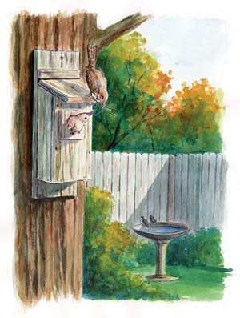
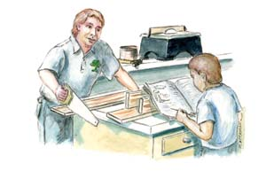
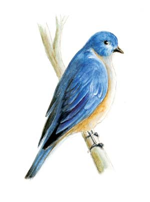
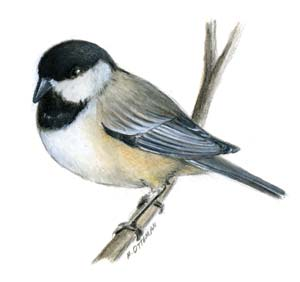
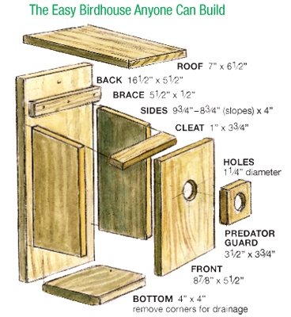

The birdhouse my son and I built two years ago last fall is as plain and drab as brown burlap, the corners not quite square, the sloped roof a tad up-cupped from multiple seasons of Carolina weather. It’s not much more than a shanty compared to its heart- and flower-painted gift-shop counterparts. You’ll never see it featured in Fine Woodworking or Better Homes & Gardens.
But you will see it, or rather countless others like it, tacked to trees and fence posts all across this nation. It is the Basic Birdhouse, and though I can’t claim statistics to prove it, I’d bet my pocketknife it’s the most popular woodworking project in modern-day America. Little wonder. There’s a lot of beauty in that little nest box, when you think about it.
For starters, there’s the design’s simplicity. All you need to build this basic birdhouse are about an hour’s time, common hand tools, a few screws or nails, and lumber no fancier or more expensive than a standard 6-foot length of 1-by-6 shelf board, plus a scrap piece of 1-by-8 big enough for the roof. Use pine, cedar, spruce or whatever kind of wood you might have on hand - except of course wood treated with toxic preservatives.
Plus, there’s the little house’s versatility. Nail it to a tree or post 5 to 10 feet above the ground in or at the edge of open woods or shrubbery, and you’ll invite house wrens, titmice, nuthatches, chickadees and downy woodpeckers. And with simple changes, you can modify the design to make a bluebird house (more on the next page).
But the true beauty of this birdhouse is its collective power as protective breeding habitat for cavity-nesting birds. Natural homes are becoming fewer and farther between. Thank the chain saws, the housing developments, the road construction and the homeowners too quick to get rid of standing dead trees. At least some of that damage, though, is being offset. Thank the backyard nail-bangers who take the time to cobble together basic bird homes.
This time of year is perfect for building new nurseries for next year’s feathered nesters. The illustration in the Image Gallery shows the various parts and dimensions for the Basic Birdhouse. The following are some basic building tips:
1. If you’re starting with a 6-foot 1-by-6 board, cut off a 30-inch length and rip that piece to 4 inches wide. Then cut the sides, bottom, cleat and predator guard from the 4-incher. Use the remainder of the 1-by-6 for the back and front.
2. Attach the components with 11/4-inch galvanized nails or wood screws.
3. Affix the sides to the back first, then slip the bottom between the sides (it’ll be a tight fit) and screw or nail it in place.
4. Use a hole saw or spade bit to drill the holes in the front and the predator guard. The front hole’s center should be precisely 7 inches from the front’s bottom. Make sure the holes are perfectly aligned when you attach the guard to the front, then affix the front to the sides. The predator guard keeps squirrels and larger birds, such as starlings, from entering the nest.
5. The brace and cleat (which attaches to the roof’s underside) help to hold the removable roof. You want the cleat to fit snugly just behind the house’s front panel when the roof is in place. Position the cleat on the underside of the roof, about 31/8 to 31/4 inches from the roof’s front - you’ll have to experiment a bit to get the right fit - and screw it down. I used screen molding for the brace, but any scrap piece that’s 51/2 inches by a half-inch or so will do. Use one 11/2-inch wood screw to attach the roof to the front piece; this way you can easily remove it later. The gap between the roof and sides provides ventilation.
6. Drill a quarter-inch mounting hole in the back, three-quarters of an inch from the top and another three-quarters of an inch from the bottom. Use these holes when mounting the nest box to a tree or post.
7. I prefer to stain rather than paint the exterior, to give the box a more natural look. If you use paint, choose an exterior-grade latex. Leave the interior unfinished.
To make a bluebird house, just lengthen the box’s front and sides by an inch, and drill a 11/2-inch diameter opening positioned 8 inches from the floor to the hole’s center. Then mount the box on a post or pole 3 to 6 feet above the ground in an open, sunny area.
A nest box’s main purpose, of course, is to provide a safe place for cavity-nesting birds and their offspring during the main breeding season, which can be from late winter through late summer, depending on the species and the region’s climate.
But birdhouses also have their place in the “off season.” Most of the species that nest in homemade boxes will use them as harsh-weather shelters and overnight roosts in winter. Here’s how to help keep resident birds comfortable during the cold season.
Out with the old. Once the nesting season’s over, it’s a good idea to clean out birdhouses. Take them down and remove old nesting material, droppings and any other debris. Nests can be home to lice, fleas, fungi and disease pathogens, so wear gloves and a dust mask. Dump the old material into a plastic bag and tie off the bag before disposing.
Some experts advise washing nest box interiors with a solution of one part bleach to nine parts hot water; others say washing isn’t necessary. If you wash it, put the open box in full sun for at least a day to dry before reinstalling it in its original location.
Up with the new. Late fall may seem like an odd time to expose spanking-new nest boxes to the coming non-nesting season’s harsh weather, but birds seeking shelter from wintry blasts would surely disagree. What’s more, a season of weathering helps new nest boxes blend more naturally into spring’s landscape, making them more likely to be adopted as homes.
Add insulation. Whether it’s a freshly cleaned-out box or a newly constructed one, add a handful or two of dried grass or pine needles to the bottom of the box before installing it. Don’t overdo it: an inch or two of insulating material keeps winter residents warmer, but more than that makes raiding the box easier for predators.
Make way for a new generation. Check your boxes just before the new nesting season begins. Some may need cleaning again. Evict any mice that may have taken up residence in the box - small rodents can survive without prefab housing. If the insulation in the bottom of the box is damp or soiled, remove it too - the coming season’s occupants will add their own floor covering.
|
 MICHAEL OTTEMAN This homemade birdhouse can attract a variety of birds to your back yard, including house wrens. |
 MICHAEL OTTEMAN You can build our Basic Birdhouse with a few pieces of lumber, tools you probably have on hand and an hour or so of your time.
|
 MICHAEL OTTEMAN With a few simple modifications, you can adapt the Basic Birdhouse design to attract bluebirds. |
|
 MICHAEL OTTEMAN Chickadees are just one of several birds that could make your backyard birdhouse home. |
 MICHAEL OTTEMAN The Mother Earth News Basic Birdhouse. Follow the steps outlined in the article and you can make this nest box in no time. |
|